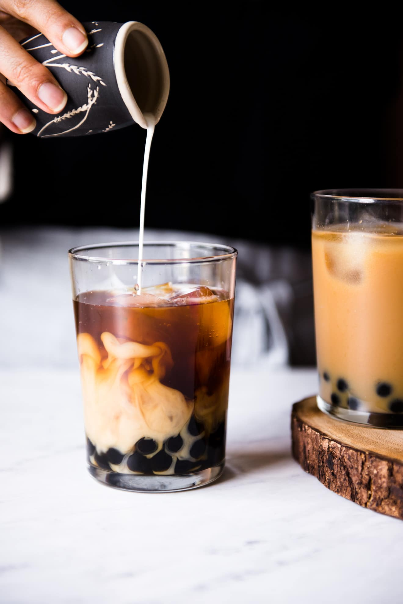

bubble tea

description:
I used Chinese breakfast tea for my bubble tea recipe, but any other black tea or strong tasting green teas will also work!
Ingredients:
- 8 bags of black tea or 3 tablespoons loose-leaf black tea
- 4 cups hot water
- 3/4 cup quick-cooking tapioca pearls
- whole milk to serve, or your choice of milk
- simple syrup to serve, or your choice of sweetener
For the Simple Syrup
- 1/2 cup water
- 1/2 cup sugar
Instructions
- Prepare the tea: Steep the tea bags or leaves with 4 cups of freshly boiled water. Let the tea sit in water until it cools completely.
- Prepare the simple syrup (if using): Add the water and sugar to a saucepan and quickly stir everything together. Heat the water on medium-high and cook until the water boils and the sugar completely dissolves. Remove the saucepan from heat and let the simple syrup cool before transferring to a jar.
- Cook the tapioca pearls: Bring about 4 cups of water to boil and add the tapioca pearls. Stir the pearls and wait for them to float to the top. Then, cook them for another 5 minutes. Test a pearl to see if it has reached the desired level of softness. Cook the pearls for another few minutes if they are still stiff. Use a slotted spoon to remove the pearls from the hot water. Quickly rinse the pearls with water. Transfer the pearls into a bowl, and mix the pearls with a few tablespoons of simple syrup (to taste).
- Assemble the drinks: Strain the tea into a pitcher. Divide the cooked tapioca pearls into 4 large glasses. Next, add a few ice cubes to each glass. Pour 1 cup of the tea into each glass. Add 1 1/2 tablespoons of milk and 1 1/2 tablespoons of simple syrup into each glass. Stir and taste the milk tea. Add more milk or simple syrup to your taste.
- If you are serving the beverage to guests, have a small pitcher of milk and the jar of simple syrup ready so that each guest can adjust their drinks to their taste. The drink is usually served with large boba straws (large enough for the tapioca pearls to go through). If you don’t have the straws on hand, you can use spoons to scoop out the tapioca pearls.